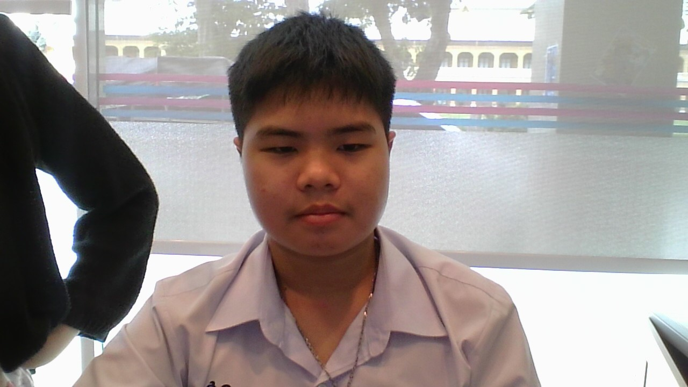

ประวัติส่วนตัวของฉัน
=ชื่อ-นามสกุล:ฐณกฤษฏิ์ ปุจฉาการ
ชื่อเล่น:ไอซ์
อายุ: 13 ปี
วันเกิด:6 กรกฎาคม 2554
ศึกษาอยู่: ชั้นมัธยมศึกษา212
ที่อยู่: กระทุ่มแบน สมุทรสาคร
วิชาที่ชอบ: ประวัติศาสตร์
งานอดิเรก: เล่นเกม
อาชีพในฝัน: อัยการ
ที่อยู่ : กระทุ่มแบน สมุทรสาคร
เพลงโปรดของฉัน